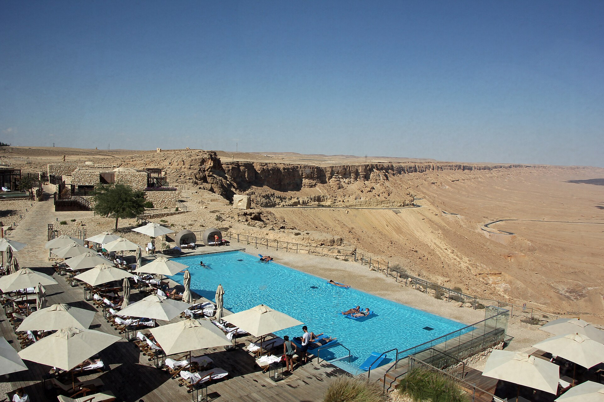

Culture & history
China
From the Great Wall to tranquil gardens: discover layers of history alongside modern cities.
Explore China ↗
Asia · tailor-made and privately guided
Temple gardens in the morning, vibrant cities, quiet landscapes. We bring your interests together in a personal journey through Asia, with carefully chosen places to stay and time to look closer.
An early walk through a temple complex, dinner with a local family, a few days by the sea, or a route beyond the familiar: our Travel Atelier Advisors listen and design a journey that feels right for you.
Our Travel Atelier Advisors know their destinations firsthand. Together with you, they shape the route, pace, and places to stay. Local partners add their own perspectives to the planning.
The many sides of Asia
These ideas are starting points. Together, we explore which countries and landscapes you would like to combine.
Culture & history
From the Great Wall to tranquil gardens: discover layers of history alongside modern cities.
Explore China ↗
Nature & local encounters
Experience rice terraces, historic cities, and the distinctive tranquility of Ha Long Bay.
Explore Vietnam ↗
Culture & culinary discoveries
Colors, palaces, and fascinating contrasts—at your pace and shaped around your interests.
Explore India ↗
Time for the unexpected
Your private guide and chauffeur give you freedom: to ask questions, make spontaneous stops, and connect with people. We take care of thoughtful planning and the right accommodations.
How we workWhat you can expect
01
Our Travel Atelier Advisors visit their destinations themselves. Their recommendations draw on personal impressions and vetted local partners.
02
A dedicated Travel Atelier Advisor supports you from your first idea through preparation and your return—and is there for you during your journey, too.
03
We work with selected local partners and design journeys with respect for your destination's cultural and natural diversity.
The Asia Travel Atelier
Our Travel Atelier Advisors visit their Asian destinations themselves. Regular visits help them assess partner quality and local service and discover fresh personal recommendations.
How our Travel Atelier worksSelected trip ideas
Featured destinations and a new private Israel travel idea—a starting point for personal planning, not a ready-made package tour.

A tailor-made route from the Mediterranean through Galilee and Jerusalem to the wide-open Negev—with private planning and carefully selected accommodations.
View the Israel journey ↗Historic cities, landscapes, and Ha Long Bay as building blocks for a privately planned journey.
Explore Vietnam ↗
Our Travel Atelier Advisors visit their destinations themselves and assess the quality of local partners firsthand.
Our expertise ↗Digital support. Personal attention.
Beta · No public app store download yetThe current Flutter beta brings together travel phases, flight and airport information, hotel and transfer details, documents, country information, eSIM workflows, and a digital travel journal. Your Travel Atelier Advisors remain your dedicated contacts.
Some backend, eSIM, identity, payment, and concierge integrations are still in preparation or simulated. We explain in advance which features are actually available for your specific journey.
Get to know AST Connector+ ↗Travel Atelier insight · Asia
Asia brings together very different climates, distances, and ways of traveling. These questions help turn early ideas into a realistic route shaped around you.
01
Monsoon patterns, temperatures, and local festivals vary between countries and even within them. Travel dates and route should be considered together.
02
Long distances can make domestic flights and rail journeys a substantial part of a trip. A thoughtful pace accounts for transfers and overnight stays.
03
Temples, markets, and local encounters often benefit from time buffers and a local guide who can explain daily rhythms and access requirements.
Demo editorial: These expertise examples and additional FAQ answers are illustrative drafts. Verify and approve destinations, access, seasonal guidance, and operational statements before publication.
Good to know
Clear answers about planning, support, and budget—before you send your inquiry.
There is no single best season for all of Asia. Weather, monsoon patterns, altitude, and local holidays vary by country and region. Check current local seasonal information against the exact route.
It depends on trip length, distances, and preferred pace. Fewer countries with more time in each place can feel more rewarding than many short stops. Include transfer and rest days when considering the route.
A local guide can add cultural context, help with local routines, and make orientation easier. Whether you want a guide throughout or only in selected places depends on your interests and destination.
Planning usually starts with dates, interests, duration, preferred accommodation, and budget. These help shape a route for discussion. Availability, services, prices, and contracting parties must then be confirmed individually.
The published routes are travel ideas, not fixed group programs. We tailor the route, length of stay, guide, chauffeur, and accommodations to your wishes. Your individual proposal clearly states which services and contracting partners apply to your journey.
Our Travel Atelier Advisors visit their destinations and assess local partners. Those impressions inform their advice, from choosing a region or accommodation to finding the right pace.
Inquiries for tailor-made long-haul travel generally start at a total budget of €5,000 per person, including international flights. The actual price depends on the route, season, trip length, accommodations, and services. For budgets below €5,000, Europa Special Tours offers suitable getaways. Switching forms does not transfer any personal contact details.
No. Tell us what interests you—culture, nature, food, local encounters, or relaxation, for example. Together, we will identify a suitable destination and a realistic route. Our destinations page also links directly to the official country-specialist websites.
Your personal point of contact supports you before, during, and after the journey. Contact details and availability are confirmed in your travel documents.
The first step
Your travel dates, interests, and budget give us a starting point for our conversation.
Decision checklist